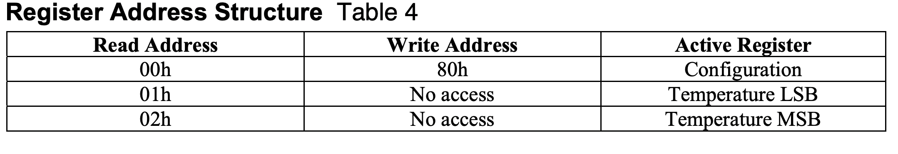
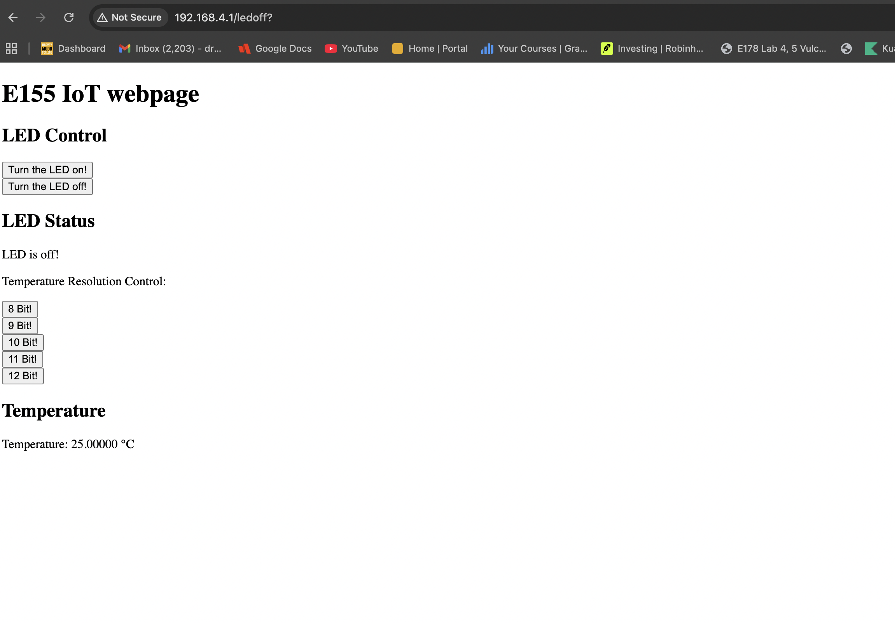
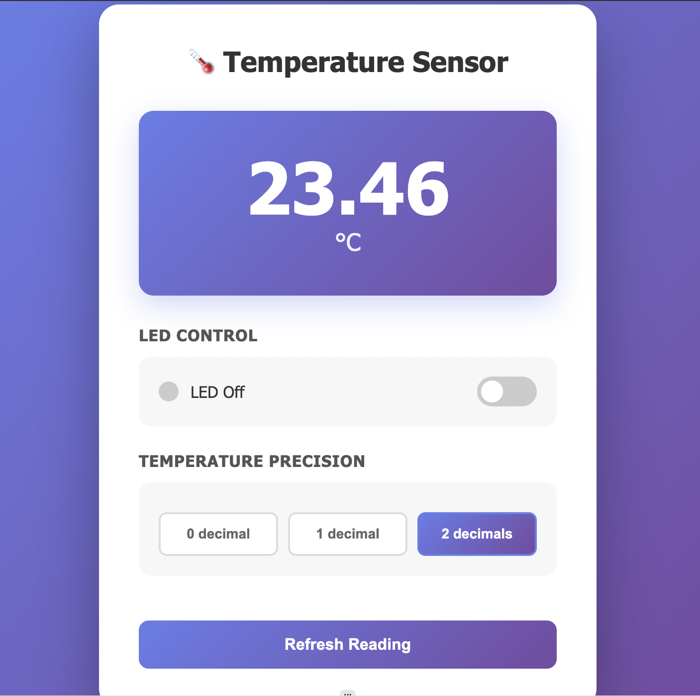

Lab 6 - The Internet of Things and Serial Peripheral Interface
Introduction
In this lab, a design was made to use a microcontroller, the SPI interface, and the UART interface to build and design an IoT device. One first part of this design incorporated an SPI link between the microcontroller and a DS1722 temperature sensor. This link was written over the peripherals, MISO, MOSI, CE, and SYSCLK. The next part was an UART connection between the microcontroller and a ESP8266 wifi module. The wifi module would output the temperature values and the resolution coming from the microcontroller. As the final part of the design, a website was created within the microcontroller to output the temperature values and the user is able to control the temperture resolution, and an onboard LED.
The design was developed using C on SEGGER, and implemented on an STM32L432KC Microcontroller.
Technical Documentation
The source code for this lab can be found in this GitHub repo.
The documentation for the STM32L432KC manual Github link.
The documentation for the DS1722 Github link.
The documentation for the ESP8266 Github repo.
Equations
There were no equations used for this lab.
Example DS1722 Register Address
To be able to control the resolution of the tempertaure sensor, the user must look at the datasheet and write and read from the correct registers. Along with this, Proper modes and enabling bits also need to be written to ensure synchronization.

Logic Analyzer
This overall design was tested using the Logic Analyzer option on an Oscilliscope. This function performs the same as the FPGA waveforms that we have seen in previous labs. It portrays all essential parts of the SPI protocol, which include the clock, enabler, MISO and MOSI.

Above are clearly shown the enabler(D9), the clock(D10), MISO(D11), and MOSI(D12). On the bottom we can see the clear outputs from the MOSI and MISO. On the MISO wave, first see the sensor waiting for an input read/write. Once this first instruction is sent from MOSI (226), which is the starting resolution, we see dont see an output in MISO because we are writing. However once we read the LSB and MSB registers as shown in MOSI, the MISO changes accordingly to show the output value of 24.218, which is around what we expected around room temperature.
Wiring Schematic

Above pictures the electrical circuit for our design. It portrays resistors, and all other electrical components used for the design.
Results and Discussion
Printed Temperature Values
For this lab, a website was created to be able to toggle an LED on and off, and control the resolution of a tempertaure sensor, the output of the seen can be seen below.

Conclusion
The design was a success. The microcontroller successfully was linked via SPI to the DS1722, and via UART to the ESP8266. Along with this, a webiste was created successfully to read the temperature values over wifi from the ESP8266, and the user was able to change and control a LED, and the resolution of the temperature sensor.
This Lab took 12 hours.
Suggestions
To, in future labs, better understand the SPI interface beforehand and understand how it compares to other communication protocols such as I2C or I2S.
This lab took me 15 hours. ## Ai prototype Here is the AI prototype for this lab. Posted below is the prompt that was plugged into Claude AI: 1. I’m making a web portal to interface with a temperature sensor. Create a HTML page that looks good and is intuitive to show the temperature, control an LED, and change the precision of the readout.
Below is the output from the LLM.

The LLM did not output any code.
- Write me a C function to carry out a SPI transaction to retrieve a temperature reading from a DS1722 sensor. Make use of CMSIS libraries for the STM32L432KC.
Output code:
/** * DS1722 Temperature Sensor SPI Driver for STM32L432KC * Using CMSIS libraries */
#include “stm32l4xx.h” #include <stdint.h>
// DS1722 Register Addresses #define DS1722_REG_CONFIG 0x80 #define DS1722_REG_TEMP_LSB 0x01 #define DS1722_REG_TEMP_MSB 0x02
// DS1722 Configuration bits #define DS1722_CONFIG_SHUTDOWN 0x01 #define DS1722_CONFIG_ONESHOT 0x10 #define DS1722_CONFIG_RES_8BIT 0x00 #define DS1722_CONFIG_RES_9BIT 0x02 #define DS1722_CONFIG_RES_10BIT 0x04 #define DS1722_CONFIG_RES_11BIT 0x06 #define DS1722_CONFIG_RES_12BIT 0x08
// GPIO Configuration (adjust pins as needed) #define SPI_CS_PIN 4 // PA4 for CS #define SPI_SCK_PIN 5 // PA5 for SCK #define SPI_MISO_PIN 6 // PA6 for MISO #define SPI_MOSI_PIN 7 // PA7 for MOSI
/** * Initialize SPI1 peripheral for DS1722 communication * Assumes system clock is already configured */ void DS1722_SPI_Init(void) { // Enable clocks for GPIOA and SPI1 RCC->AHB2ENR |= RCC_AHB2ENR_GPIOAEN; RCC->APB2ENR |= RCC_APB2ENR_SPI1EN;
// Configure GPIO pins for SPI1 (PA5=SCK, PA6=MISO, PA7=MOSI)
// Set alternate function mode (AF5 for SPI1)
GPIOA->MODER &= ~(GPIO_MODER_MODE5 | GPIO_MODER_MODE6 | GPIO_MODER_MODE7);
GPIOA->MODER |= (GPIO_MODER_MODE5_1 | GPIO_MODER_MODE6_1 | GPIO_MODER_MODE7_1);
// Set alternate function AF5 (SPI1) for PA5, PA6, PA7
GPIOA->AFR[0] &= ~(GPIO_AFRL_AFSEL5 | GPIO_AFRL_AFSEL6 | GPIO_AFRL_AFSEL7);
GPIOA->AFR[0] |= (5 << GPIO_AFRL_AFSEL5_Pos) |
(5 << GPIO_AFRL_AFSEL6_Pos) |
(5 << GPIO_AFRL_AFSEL7_Pos);
// Set high speed for SPI pins
GPIOA->OSPEEDR |= (GPIO_OSPEEDR_OSPEED5 | GPIO_OSPEEDR_OSPEED6 | GPIO_OSPEEDR_OSPEED7);
// Configure PA4 as CS (Chip Select) - output, push-pull
GPIOA->MODER &= ~GPIO_MODER_MODE4;
GPIOA->MODER |= GPIO_MODER_MODE4_0;
GPIOA->OTYPER &= ~GPIO_OTYPER_OT4;
GPIOA->OSPEEDR |= GPIO_OSPEEDR_OSPEED4;
// Set CS high (inactive)
GPIOA->BSRR = (1 << SPI_CS_PIN);
// Configure SPI1
// Disable SPI for configuration
SPI1->CR1 &= ~SPI_CR1_SPE;
// Configure SPI: Master mode, CPOL=0, CPHA=0, 8-bit data
// Baud rate: fPCLK/16 (assuming 80MHz PCLK, this gives ~5MHz SPI clock)
SPI1->CR1 = SPI_CR1_MSTR | // Master mode
SPI_CR1_SSM | // Software slave management
SPI_CR1_SSI | // Internal slave select
(3 << SPI_CR1_BR_Pos); // Baud rate: fPCLK/16
SPI1->CR2 = (7 << SPI_CR2_DS_Pos) | // 8-bit data size
SPI_CR2_FRXTH; // RXFIFO threshold
// Enable SPI
SPI1->CR1 |= SPI_CR1_SPE;}
/** * Send/receive a single byte via SPI */ static uint8_t SPI_TransferByte(uint8_t data) { // Wait until TX buffer is empty while (!(SPI1->SR & SPI_SR_TXE));
// Send data
*(__IO uint8_t *)&SPI1->DR = data;
// Wait until RX buffer has data
while (!(SPI1->SR & SPI_SR_RXNE));
// Read and return received data
return *(__IO uint8_t *)&SPI1->DR;}
/** * Assert CS (Chip Select) - pull low */ static inline void DS1722_CS_Low(void) { GPIOA->BSRR = (1 << (SPI_CS_PIN + 16)); // Reset bit }
/** * Deassert CS (Chip Select) - pull high */ static inline void DS1722_CS_High(void) { GPIOA->BSRR = (1 << SPI_CS_PIN); // Set bit }
/** * Write to DS1722 register */ void DS1722_WriteRegister(uint8_t reg, uint8_t value) { DS1722_CS_Low(); SPI_TransferByte(reg); // Send register address SPI_TransferByte(value); // Send data DS1722_CS_High(); }
/** * Read from DS1722 register */ uint8_t DS1722_ReadRegister(uint8_t reg) { uint8_t value;
DS1722_CS_Low();
SPI_TransferByte(reg); // Send register address
value = SPI_TransferByte(0x00); // Dummy byte to read data
DS1722_CS_High();
return value;}
/** * Configure DS1722 sensor * resolution: DS1722_CONFIG_RES_8BIT to DS1722_CONFIG_RES_12BIT */ void DS1722_Configure(uint8_t resolution) { // Write configuration: continuous conversion mode with specified resolution DS1722_WriteRegister(DS1722_REG_CONFIG, resolution); }
/** * Simple delay function (approximate, not precise) / static void delay_ms(uint32_t ms) { // Assumes 80MHz system clock, adjust as needed for (uint32_t i = 0; i < ms 8000; i++) { __NOP(); } }
/** * Read temperature from DS1722 sensor * Returns temperature in degrees Celsius as a float * * The DS1722 stores temperature in two registers: * - MSB: Integer part (signed) * - LSB: Fractional part (upper bits) */ float DS1722_ReadTemperature(void) { int8_t temp_msb; uint8_t temp_lsb; float temperature;
// Read temperature registers
temp_msb = (int8_t)DS1722_ReadRegister(DS1722_REG_TEMP_MSB);
temp_lsb = DS1722_ReadRegister(DS1722_REG_TEMP_LSB);
// Calculate temperature based on resolution
// LSB bits represent fractional part: bit7=0.5, bit6=0.25, bit5=0.125, etc.
temperature = (float)temp_msb;
temperature += (temp_lsb >> 5) * 0.125f; // Upper 3 bits for 12-bit resolution
return temperature;}
/** * Initialize and read temperature from DS1722 * Example usage function */ float DS1722_GetTemperature(void) { static uint8_t initialized = 0;
// Initialize SPI and sensor on first call
if (!initialized) {
DS1722_SPI_Init();
delay_ms(10); // Wait for sensor to power up
DS1722_Configure(DS1722_CONFIG_RES_12BIT); // 12-bit resolution
delay_ms(250); // Wait for first conversion (max 240ms for 12-bit)
initialized = 1;
}
// Read and return temperature
return DS1722_ReadTemperature();}
Here are a few ideas of on what you might comment on:
I think the Quality of both was really good. I liked the HTML page, however just based on glance without running I can tell that the code for the SPI and the sensor was wrong. This is due to the code saying that the sensor is active low, meaning it probably did not read the datasheet. This is what I noticed at first glance, and because you cannot switch the sensors hardware around, this code is faulty. Compared to my setup it was fine. My had the same idea hwoever it was just written completely differently. The SPI setup was around the same however. The LLLM chose an input clock of 5MHZ which is an acceptable range for the sensor, which can have inputs up to 10MHZ. The LLM works well for creating the initial idea and overall structure. But its code is faulty due to it not reading the datasheet correctly.